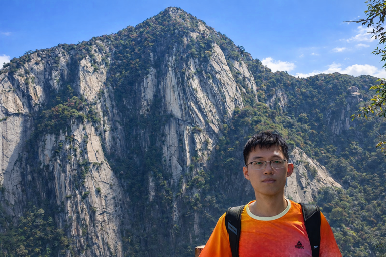

About

Xiaodong Feng
I am a postdoctoral researcher at the Institute of Advanced Study, Beijing Normal–Hong Kong Baptist University, working with Prof. Tao Tang. I earned my Ph.D. (2024) from the Academy of Mathematics and Systems Science (AMSS), Chinese Academy of Sciences, advised by Prof. Tao Zhou, and my Bachelor’s degree (2019) in Mathematics from Beijing Normal University.
My research focuses on scientific machine learning and uncertainty quantification, with an emphasis on efficient surrogate modeling, physics-informed learning, and Bayesian inverse problems.
News and Recent Updates
- 02/2026 Our paper “Integral Regularization PINNs for Evolution Equations” is now online in Communications in Computational Physics.
- 12/2025 Our new preprint “Overcoming Spectral Bias via Cross-Attention” is now on arXiv (arXiv:2512.18586).
- 07/2025 Our new preprint “LVM-GP: Uncertainty-Aware PDE Solver via Coupling Latent Variable Model and Gaussian Process” is now on arXiv (arXiv:2507.22493).